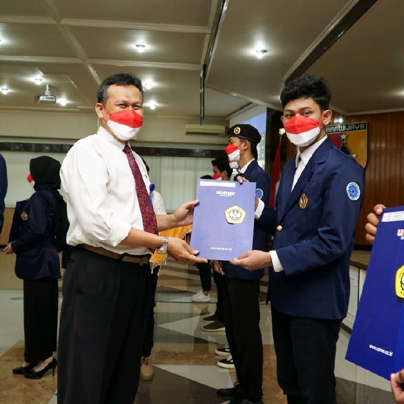

PROFIL
2012 - 2015
2015 - 2018
2019 - Sekarang

Saya mahasiswa dari universitas merdeka malang prodi S1 Sistem Informasi semester 7 saya bekerja didunia desain grafis, sudah terlatih dalam aplikasi adobe illustrator, photoshop maupun Excel dan berpengalaman dalam beroganisasi di kampus